Note
Click here to download the full example code
PVWatts¶
PVWatts¶
Here we will demonstrate one of the more basic PV models implemented by pvlib. The PVWatts module model requires only two array parameters -- the array size (nameplate capacity) and the array's efficiency change with cell temperature. Typical array sizes range from a few kW for residential arrays to hundreds of MW for large utility-scale systems. The cell temperature response parameter, often called the module's temperature coefficient, determines the efficiency loss for a temperature increase. For example, a module that produces 100W at test conditions but only 95W when the cell temperature is increased by 10 degrees has a temperature coefficient of -0.5%/°C. Typical temperature coefficients range from -0.5%/°C to -0.2%/°C.
We'll read in weather data, run the irradiance transposition, and model cell temperature as in previous tutorials.
STEPS:¶
- Define System
- Calculating the Temperature of the system
- Calculating the Power (DC)
- Calculating the AC Power
from pvlib import pvsystem
import pandas as pd
import matplotlib.pyplot as plt
# Example module parameters for the Canadian Solar CS5P-220M:
parameters = {
"Name": "Canadian Solar CS5P-220M",
"BIPV": "N",
"Date": "10/5/2009",
"T_NOCT": 42.4,
"A_c": 1.7,
"N_s": 96,
"I_sc_ref": 5.1,
"V_oc_ref": 59.4,
"I_mp_ref": 4.69,
"V_mp_ref": 46.9,
"alpha_sc": 0.004539,
"beta_oc": -0.22216,
"a_ref": 2.6373,
"I_L_ref": 5.114,
"I_o_ref": 8.196e-10,
"R_s": 1.065,
"R_sh_ref": 381.68,
"Adjust": 8.7,
"gamma_r": -0.476,
"Version": "MM106",
"PTC": 200.1,
"Technology": "Mono-c-Si",
}
cases = [(1000, 55), (800, 55), (600, 55), (400, 25), (400, 40), (400, 55)]
conditions = pd.DataFrame(cases, columns=["Geff", "Tcell"])
# adjust the reference parameters according to the operating
# conditions using the De Soto model:
IL, I0, Rs, Rsh, nNsVth = pvsystem.calcparams_desoto(
conditions["Geff"],
conditions["Tcell"],
alpha_sc=parameters["alpha_sc"],
a_ref=parameters["a_ref"],
I_L_ref=parameters["I_L_ref"],
I_o_ref=parameters["I_o_ref"],
R_sh_ref=parameters["R_sh_ref"],
R_s=parameters["R_s"],
EgRef=1.121,
dEgdT=-0.0002677,
)
# plug the parameters into the SDE and solve for IV curves:
curve_info = pvsystem.singlediode(
photocurrent=IL,
saturation_current=I0,
resistance_series=Rs,
resistance_shunt=Rsh,
nNsVth=nNsVth,
ivcurve_pnts=100,
method="lambertw",
)
# plot the calculated curves:
plt.figure()
for i, case in conditions.iterrows():
label = (
"$G_{eff}$ " + f"{case['Geff']} $W/m^2$\n"
"$T_{cell}$ " + f"{case['Tcell']} $\\degree C$"
)
plt.plot(curve_info["v"][i], curve_info["i"][i], label=label)
v_mp = curve_info["v_mp"][i]
i_mp = curve_info["i_mp"][i]
# mark the MPP
plt.plot([v_mp], [i_mp], ls="", marker="o", c="k")
plt.legend(loc=(1.0, 0))
plt.xlabel("Module voltage [V]")
plt.ylabel("Module current [A]")
plt.title(parameters["Name"])
plt.gcf().set_tight_layout(True)
plt.gcf().set_tight_layout(False)
# draw trend arrows
def draw_arrow(ax, label, x0, y0, rotation, size, direction):
style = direction + "arrow"
bbox_props = dict(boxstyle=style, fc=(0.8, 0.9, 0.9), ec="b", lw=1)
t = ax.text(
x0,
y0,
label,
ha="left",
va="bottom",
rotation=rotation,
size=size,
bbox=bbox_props,
zorder=-1,
)
bb = t.get_bbox_patch()
bb.set_boxstyle(style, pad=0.6)
ax = plt.gca()
draw_arrow(ax, "Irradiance", 20, 2.5, 90, 15, "r")
draw_arrow(ax, "Temperature", 35, 1, 0, 15, "l")
plt.show()
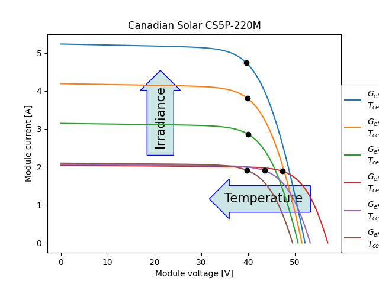
print(
pd.DataFrame(
{
"i_sc": curve_info["i_sc"],
"v_oc": curve_info["v_oc"],
"i_mp": curve_info["i_mp"],
"v_mp": curve_info["v_mp"],
"p_mp": curve_info["p_mp"],
}
)
)
Out:
i_sc v_oc i_mp v_mp p_mp
0 5.235561 52.129782 4.742475 39.614015 187.868468
1 4.190781 51.483032 3.805721 39.867810 151.725752
2 3.144837 50.649227 2.861983 39.956700 114.355377
3 2.043319 56.987478 1.886789 47.278408 89.204377
4 2.070523 53.238566 1.901044 43.490203 82.676790
5 2.097727 49.474043 1.912108 39.735025 75.977653
from pvlib import solarposition
import pandas as pd
import numpy as np
import matplotlib.pyplot as plt
tz = "europe/Zurich"
lat, lon = 47.47970, 8.53580
times = pd.date_range("2013-01-01", "2021-01-01", freq="H", tz=tz)
plt.figure(dpi=300,figsize=(8, 8))
solpos = solarposition.get_solarposition(times, lat, lon)
# remove nighttime
solpos = solpos.loc[solpos["apparent_elevation"] > 0, :]
ax = plt.subplot(1, 1, 1, projection="polar")
# draw the analemma loops
points = ax.scatter(
np.radians(solpos.azimuth),
solpos.apparent_zenith,
s=2,
label=None,
c=solpos.index.dayofyear,
)
ax.figure.colorbar(points)
# draw hour labels
for hour in np.unique(solpos.index.hour):
# choose label position by the smallest radius for each hour
subset = solpos.loc[solpos.index.hour == hour, :]
r = subset.apparent_zenith
pos = solpos.loc[r.idxmin(), :]
ax.text(np.radians(pos["azimuth"]), pos["apparent_zenith"], str(hour))
# draw individual days
for date in pd.to_datetime(["2013-03-21", "2013-06-21", "2020-12-21"]):
times = pd.date_range(date, date + pd.Timedelta("24h"), freq="5min", tz=tz)
solpos = solarposition.get_solarposition(times, lat, lon)
solpos = solpos.loc[solpos["apparent_elevation"] > 0, :]
label = date.strftime("%Y-%m-%d")
ax.plot(np.radians(solpos.azimuth), solpos.apparent_zenith, label=label)
ax.figure.legend(loc="upper left")
# change coordinates to be like a compass
ax.set_theta_zero_location("N")
ax.set_theta_direction(-1)
ax.set_rmax(90)
plt.show()
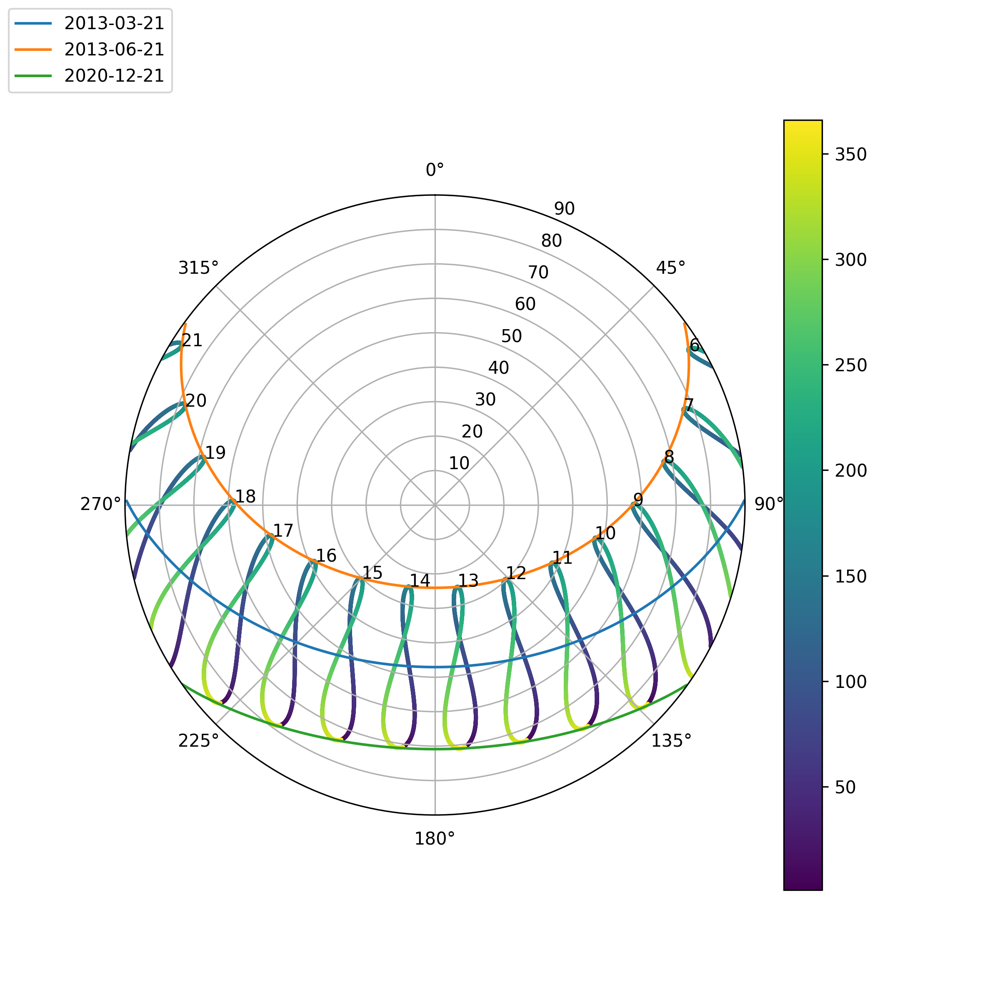
times = pd.date_range(
"2019-01-01 00:00:00", "2020-01-01", inclusive="left", freq="H", tz=tz
)
plt.rcParams["figure.figsize"] = (15,5)
solpos = solarposition.get_solarposition(times, lat, lon)
# remove nighttime
solpos = solpos.loc[solpos["apparent_elevation"] > 0, :]
fig, ax = plt.subplots()
points = ax.scatter(
solpos.azimuth, solpos.apparent_elevation, s=2, c=solpos.index.dayofyear, label=None
)
fig.colorbar(points)
for hour in np.unique(solpos.index.hour):
# choose label position by the largest elevation for each hour
subset = solpos.loc[solpos.index.hour == hour, :]
height = subset.apparent_elevation
pos = solpos.loc[height.idxmax(), :]
ax.text(pos["azimuth"], pos["apparent_elevation"], str(hour))
for date in pd.to_datetime(["2019-03-21", "2019-06-21", "2019-12-21"]):
times = pd.date_range(date, date + pd.Timedelta("24h"), freq="5min", tz=tz)
solpos = solarposition.get_solarposition(times, lat, lon)
solpos = solpos.loc[solpos["apparent_elevation"] > 0, :]
label = date.strftime("%Y-%m-%d")
ax.plot(
solpos.azimuth,
solpos.apparent_elevation,
label=label,
)
ax.figure.legend(loc="upper left")
ax.set_xlabel("Solar Azimuth (degrees)")
ax.set_ylabel("Solar Elevation (degrees)")
plt.show()
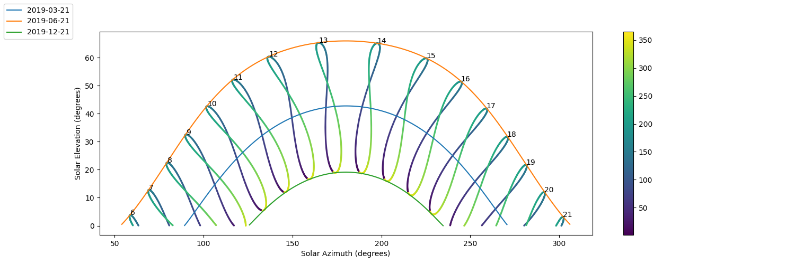
1. Define system¶
import pvlib
import pandas as pd # for data wrangling
import matplotlib.pyplot as plt # for visualization
import pathlib # for finding the example dataset
print(pvlib.__version__)
Out:
0.9.3
class Photovoltaik:
def __init__(self, path, year) -> None:
self.path = path
df_tmy, meta = pvlib.iotools.read_epw(path, year)
location = pvlib.location.Location(
latitude=meta["latitude"], longitude=meta["longitude"]
)
System¶
path = "Zurich-Kloten_2013.epw"
import numpy as np
df_tmy, meta = pvlib.iotools.read_epw(path)
location = pvlib.location.Location(
latitude=meta["latitude"], longitude=meta["longitude"]
)
times = df_tmy.index
solar_position = location.get_solarposition(times)
tilt = 30
azimuth = 180
df_poa = pvlib.irradiance.get_total_irradiance(
surface_tilt=tilt,
surface_azimuth=azimuth,
dni=df_tmy["dni"],
ghi=df_tmy["ghi"],
dhi=df_tmy["dhi"],
solar_zenith=solar_position["apparent_zenith"],
solar_azimuth=solar_position["azimuth"],
)
poa = df_poa["poa_global"]
poa_sky = df_poa["poa_sky_diffuse"]
parameters = pvlib.temperature.TEMPERATURE_MODEL_PARAMETERS["sapm"]["open_rack_glass_polymer"]
cell_temperature = pvlib.temperature.sapm_cell(
poa, df_tmy["temp_air"], df_tmy["wind_speed"], **parameters)
# power
gamma_pdc = -0.004 # divide by 100 to go from %/°C to 1/°C
nameplate = 10000
array_power = pvlib.pvsystem.pvwatts_dc(poa, cell_temperature, nameplate, gamma_pdc)
loses = 1 - pvlib.pvsystem.pvwatts_losses() / 100
dc = loses*array_power
"""
soiling: numeric, default 2
shading: numeric, default 3
snow: numeric, default 0
mismatch: numeric, default 2
wiring: numeric, default 2
connections: numeric, default 0.5
lid: numeric, default 1.5
Light induced degradation
nameplate_rating: numeric, default 1
age: numeric, default 0
availability: numeric, default 3
"""
# 0.86 × 0.96 = 0.825
pdc0 = nameplate / 0.96 # W
ac = pvlib.inverter.pvwatts(dc, pdc0)
df_plot = pd.DataFrame(
{
"Sun power on Modul": poa,
"Panel (DC)": dc,
"Inverter (AC)": ac,
}
)
print(len(df_tmy))
df_plot.sum() /1000
Out:
8760
Sun power on Modul 1228.649168
Panel (DC) 10291.541853
Inverter (AC) 9772.178951
dtype: float64
loses
Out:
0.8592433931173553
ar = dc.resample("M").sum() /1000
ar.plot.bar()
plt.xticks(np.arange(12), ['Jan', 'Feb', 'Mär', 'Mai', 'Apr', 'Jun', 'Jul', 'Aug', 'Sep', 'Okt', 'Nov', 'Dez'])
plt.ylabel("Power [W]")
plt.xlabel("Month")
plt.title("DC Power")
poa.resample(rule="M").sum().to_list()[0]/1000
df_poa.sum() / 1000
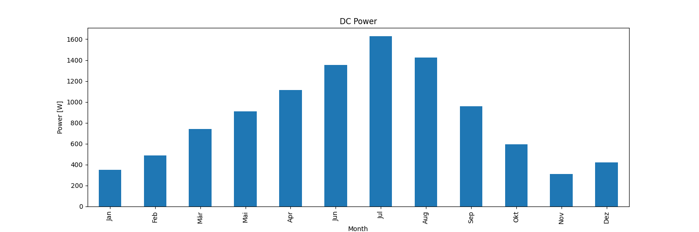
Out:
poa_global 1228.649168
poa_direct 653.458733
poa_diffuse 575.190436
poa_sky_diffuse 555.746217
poa_ground_diffuse 19.444219
dtype: float64
first_week = df_tmy[4000:4200] # Plotting 7 days, each one has 24 hours or entries
first_week[['ghi', 'dhi', 'dni']].plot()
plt.ylabel('Irradiance [W/m$^2$]')
plt.title("By Hours")
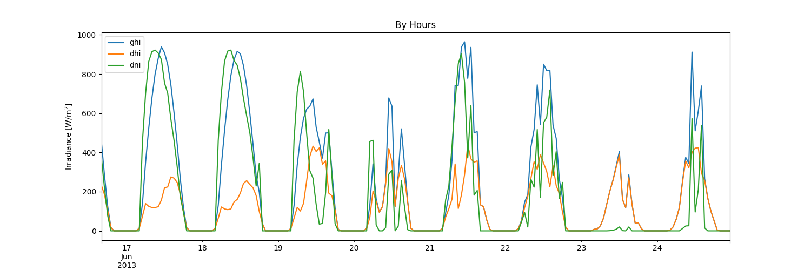
Out:
Text(0.5, 1.0, 'By Hours')
day = df_tmy.loc['2013-03-15':'2013-03-18']
plt.rcParams["figure.figsize"] = (15,5)
plt.plot(day['dni'], color='r', )
plt.plot(day['dhi'], color='g', marker='.')
plt.plot(day['ghi'], color='b', marker='s')
plt.ylabel('Irradiance [W/m$^2$]')
plt.show()
day[['ghi', 'dhi', 'dni']].plot()
-
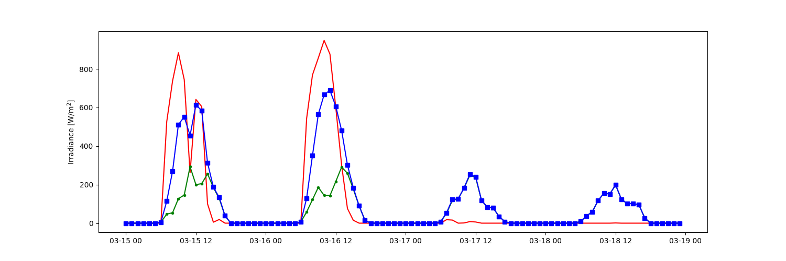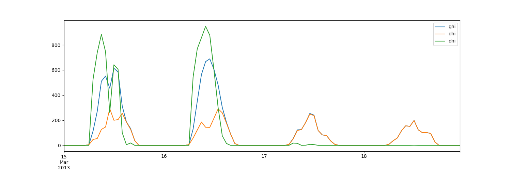
Out:
<AxesSubplot:>
day = df_tmy.loc['2013-06-15':'2013-06-18']
plt.rcParams["figure.figsize"] = (15,5)
plt.plot(day['dni'], color='r', )
plt.plot(day['dhi'], color='g', marker='.')
plt.plot(day['ghi'], color='b', marker='s')
plt.ylabel('Irradiance [W/m$^2$]')
plt.show()
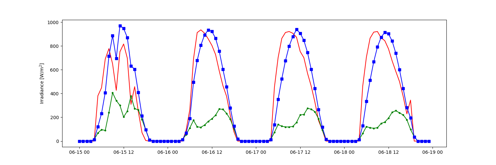
day = df_tmy.loc['2013-09-15':'2013-09-18']
plt.rcParams["figure.figsize"] = (15,5)
plt.plot(day['dni'], color='r', )
plt.plot(day['dhi'], color='g', marker='.')
plt.plot(day['ghi'], color='b', marker='s')
plt.ylabel('Irradiance [W/m$^2$]')
plt.title("Sep day")
plt.show()
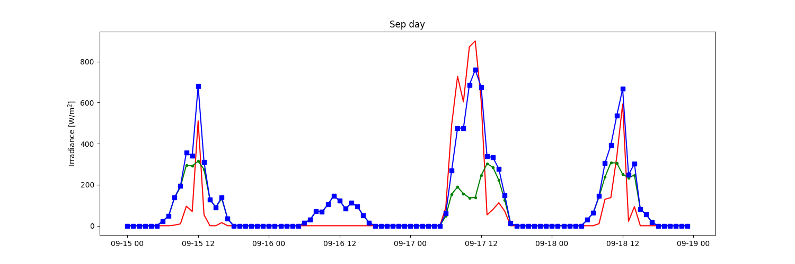
day = df_tmy.loc['2013-12-15':'2013-12-18']
plt.rcParams["figure.figsize"] = (15,5)
plt.plot(day['dni'], color='r', )
plt.plot(day['dhi'], color='g', marker='.')
plt.plot(day['ghi'], color='b', marker='s')
plt.ylabel('Irradiance [W/m$^2$]')
plt.title("Dezember day")
plt.show()
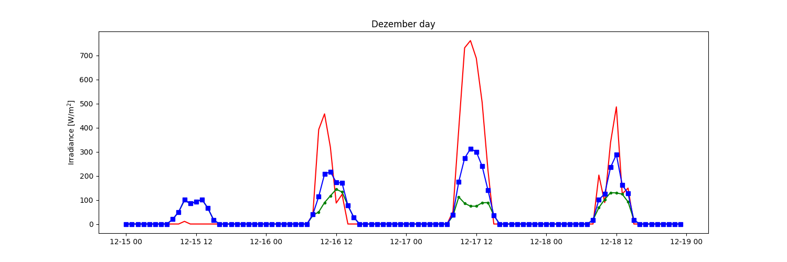
meta["latitude"], meta["longitude"]
Out:
(47.48, 8.536)
print("Sun: kwh/m2", int(poa.sum()/1000))
print("DC: 1/kW", int(dc.sum() / 1000))
print("AC: 1/kW",int(ac.sum() / 1000))
Out:
Sun: kwh/m2 1228
DC: 1/kW 10291
AC: 1/kW 9772
# summing hourly power (W) gives (W h)
df = df_plot.resample("M").sum()/1000
df.plot.bar(figsize=(10, 6))
plt.xticks(np.arange(12), ['Jan', 'Feb', 'Mär', 'Mai', 'Apr', 'Jun', 'Jul', 'Aug', 'Sep', 'Okt', 'Nov', 'Dez'])
plt.ylabel("Energy [kWh]")
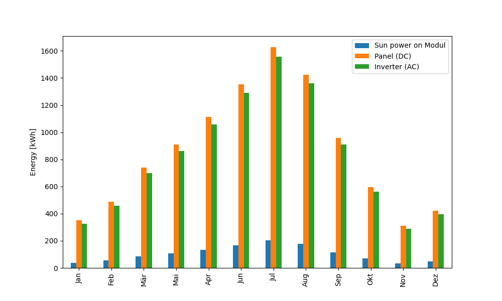
Out:
Text(148.56944444444443, 0.5, 'Energy [kWh]')
from IPython.core.display import HTML
table = df_plot.resample("M").sum()/1000
HTML(table.to_html())
Total nominal power: 10 kWp Meteodata: Meteoswiss 2020
| Month | Gh [kWh/m2] | Simulated [kWh] |
|---|---|---|
| Jan 2020 | 38 | 572 0 |
| Feb 2020 | 51 | 624 0 |
| Mrz 2020 | 105 | 1078 |
| Apr 2020 | 153 | 1379 |
| Mai 2020 | 184 | 1424 |
| Jun 2020 | 159 | 1162 |
| Jul 2020 | 195 | 1444 |
| Aug 2020 | 151 | 1206 |
| Sep 2020 | 116 | 1073 |
| Okt 2020 | 59 | 639 0 |
| Nov 2020 | 34 | 438 0 |
| Dez 2020 | 18 | 214 0 |
| Year | 1263 | 11253 |
print("Sun: kwh/m2", int(poa.sum()/1000))
print("DC: 1/kW", int(dc.sum() / 1000))
print("AC: 1/kW",int(ac.sum() / 1000))
Out:
Sun: kwh/m2 1228
DC: 1/kW 10291
AC: 1/kW 9772
ax = ac.resample("D").sum().plot( label="AC")
dc.resample("D").sum().plot(ax=ax, label="DC")
plt.rcParams["figure.figsize"] = (40,10)
plt.ylabel("Energy [kWh]")
plt.title("DC and AC Power")
plt.ylabel("Output [kWh/day]")
plt.grid()
plt.legend()
plt.show()
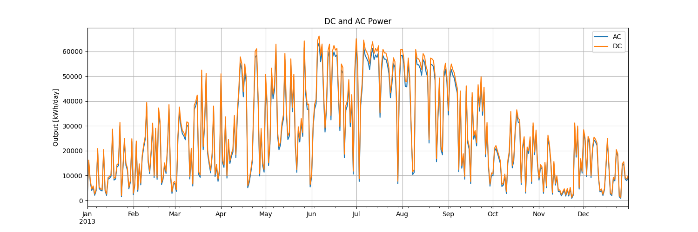
plt.rcParams["font.size"] = 14
bar = {"AC": ac.resample("M").sum()/1000,
"DC": dc.resample("M").sum()/1000}
pd.DataFrame(bar).plot.bar(figsize=(15, 12),)
print(df_plot.resample("M").sum()/1000)
plt.xticks(np.arange(12), ['Jan', 'Feb', 'Mär', 'Mai', 'Apr', 'Jun', 'Jul', 'Aug', 'Sep', 'Okt', 'Nov', 'Dez'])
plt.ylabel("Energy [kWh]")
plt.title("DC and AC Power")
plt.ylabel("Output [kWh/Month]")
plt.grid(axis='y')
plt.legend()
plt.show()
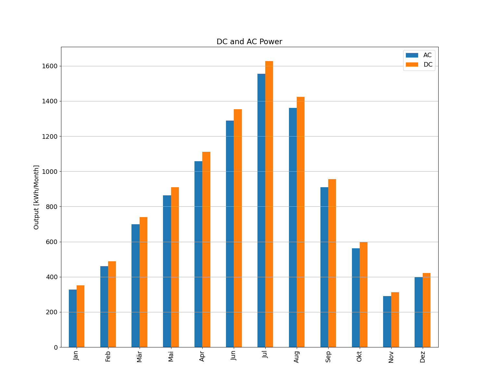
Out:
Sun power on Modul Panel (DC) Inverter (AC)
2013-01-31 00:00:00+01:00 38.494692 350.633420 326.911645
2013-02-28 00:00:00+01:00 53.672784 488.012873 459.871143
2013-03-31 00:00:00+01:00 83.392006 738.956014 699.358851
2013-04-30 00:00:00+01:00 107.681745 909.861365 863.239269
2013-05-31 00:00:00+01:00 131.628182 1112.216254 1057.149702
2013-06-30 00:00:00+01:00 165.497878 1353.043178 1289.504500
2013-07-31 00:00:00+01:00 204.188466 1627.302976 1555.574802
2013-08-31 00:00:00+01:00 177.170196 1424.280164 1360.727382
2013-09-30 00:00:00+01:00 115.700551 956.579524 910.439319
2013-10-31 00:00:00+01:00 69.452008 596.784887 563.050733
2013-11-30 00:00:00+01:00 34.949738 312.421527 289.569624
2013-12-31 00:00:00+01:00 46.820923 421.449670 396.781979
plt.rcParams["font.size"] = 14
ax = ac.resample("M").sum().plot(figsize=(15, 10), label="AC")
dc.resample("M").sum().plot(ax=ax, label="DC")
plt.title("DC and AC Power")
plt.ylabel("Output [Wh/day]")
plt.grid()
plt.legend()
plt.show()
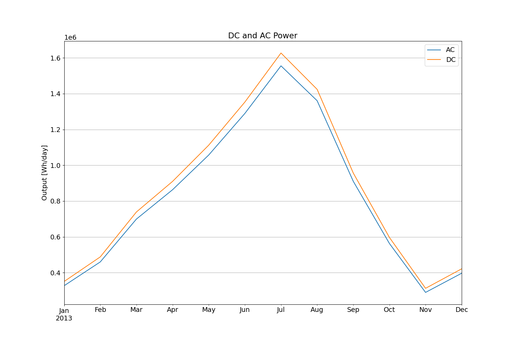
plt.rcParams["font.size"] = 14
ax = (
ac.resample("M")
.sum()
.plot.bar(
figsize=(8, 5),
label="AC",
)
)
plt.title("AC Power")
plt.ylabel("Output [Wh/day]")
plt.xticks(np.arange(12), ['Jan', 'Feb', 'Mär', 'Mai', 'Apr', 'Jun', 'Jul', 'Aug', 'Sep', 'Okt', 'Nov', 'Dez'])
plt.legend()
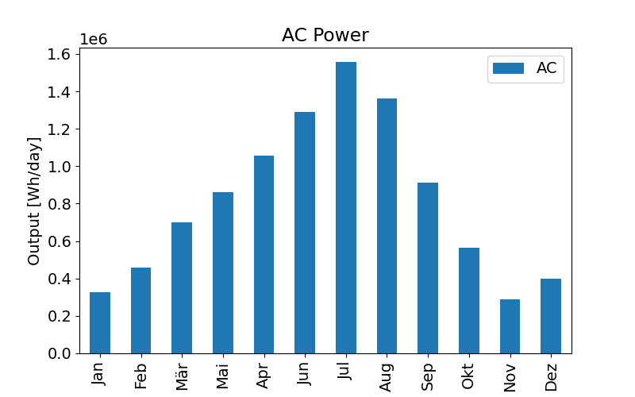
Out:
<matplotlib.legend.Legend object at 0x13776c400>
plt.rcParams["font.size"] = 14
dc.resample("M").sum().plot.bar(label="DC",figsize=(6, 5),)
plt.title("DC Power")
plt.ylabel("Output [Wh/day]")
plt.xticks(np.arange(12), ['Jan', 'Feb', 'Mär', 'Mai', 'Apr', 'Jun', 'Jul', 'Aug', 'Sep', 'Okt', 'Nov', 'Dez'])
plt.legend()
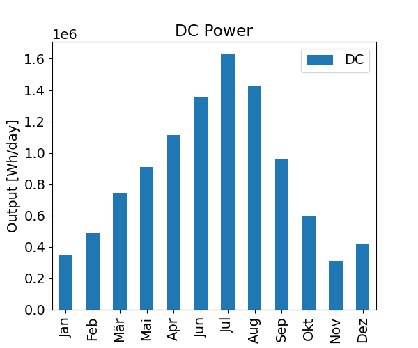
Out:
<matplotlib.legend.Legend object at 0x137706ad0>
plt.rcParams["figure.figsize"] = (10,5)
plt.scatter(poa, dc, c=df_tmy["temp_air"])
plt.colorbar()
plt.ylabel("Array Power [W]")
plt.xlabel("POA Irradiance [W/m^2]")
plt.title("Power vs POA, colored by amb. temp.")
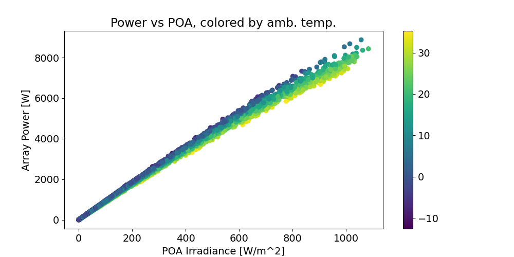
Out:
Text(0.5, 1.0, 'Power vs POA, colored by amb. temp.')
Total running time of the script: ( 0 minutes 9.581 seconds)
Download Python source code: plot_2_pvwatt.py